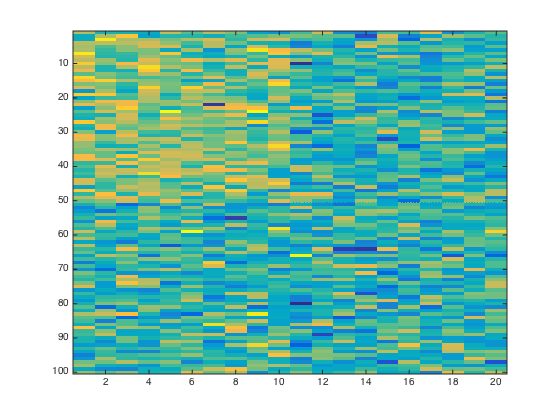
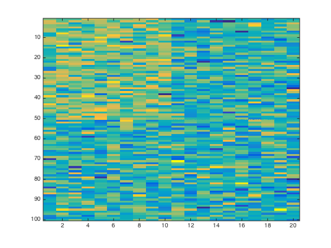

Project Setup Demo
The trickiest part of using this toolbox, as with most projects, is the organization and set up. Here, we'll start from scratch and set things up for a fake analysis. After we do, we'll be able to run Lasso, Searchlight, and SOS Lasso without doing much work at all.
Contents
The data
The fMRI data should be formatted so that each row is a training example, and the columns are the features that express each example. An example might correspond to the activation over voxels at a particular point in time, the beta values or t-values resulting from an initial univariate model of a design matrix convolved with an HRF, or anything else you like. Each feature, for our purposes, is a voxel.
- This matrix can be named whatever you like.
- It must be saved in a .mat file, either on it's own or along with other variables.
- The .mat file itself can be named whatever you like, with the one constraint that WholeBrain_MVPA will expect a subject number to be present somewhere in the filename.
- Numbers can be zero padded.
In this demo, we'll call the matrix X, which will be the only variable we save to the .mat file.
Imagine a study with 100 unique items, sampled equally from two categories or belonging to two experimental conditions. Further, imagine that there are 1,000 voxels in the cortex of this subject.
Let y represent the category or condition labels of the items. This is the target structure that we will be modelling based on the data in X. Since all methods in this package are binary classifiers, y should be binary. We'll make y dependent on independent contributions from 10 voxels.
nitems = 100; nvoxels = 1000; y = (1:100 <= 50)';
Targets metadata.targets
Information about targets (i.e., possible y vectors) should be stored in a structure with 5 required fields:
- label
- type
- targets
- sim_source
- sim_metric
Only the first three are relevant for classification analyses, but all must be present.
TARGETS(1) = struct(... 'label','faces',... 'type','category',... 'target',y, ... 'sim_source',[],'sim_metric',[]); TARGETS(2) = struct(... 'label','places',... 'type','category',... 'target',~y, ... 'sim_source',[],'sim_metric',[]);
Cross-validation
Next, we'll define indexes for cross validation. A single cross-validation scheme is a vector, containing the whole-numbers 1:k, where k is the number of cross validation folds.
The Matlab function cvpartition, which belongs to the Statistics Toolbox, is very helpful for generating cross-validation schemes. One of the major advantages of using cvpartition is that, if you give it a categorical target structure as its first argument, it will pick k holdout sets where each set has a balanced sample of each category.
For example, try:
y = repmat((1:3)', 20, 1); c = cvpartition(y, 'kfold', 10); disp(c); for i = 1:10 z = test(c, i); disp('Holdout index:'); disp(find(z)'); tabulate(y(z)); fprintf('\n\n'); end
You can pre-specify multiple cross-validation schemes. If you specify more than one, each individual scheme will be a column in a matrix. When defining your analysis, you will provide a cvscheme, which will simply be a column-index into this matrix you are defining.
For example, let's set up 10 cross validation schemes, each defining a different data partition for 10-fold cross validation.
nschemes = 10; nfolds = 10; SCHEMES = zeros(nitems, nschemes); for iScheme = 1:nschemes c = cvpartition(y,'KFold', nfolds); for iFold = 1:nfolds SCHEMES(:,iScheme) = SCHEMES(:,iScheme) + (test(c, iFold) * iFold); end end
Filters
You may want to be able to select/exclude subsets of voxels and items without needed to make multiple copies of the data. By specifying filters, you can pre-specify these subsets and apply them programmatically.
A filter is represented as a structure with 3 required fields:
- label - names the filter so that it can be easily referenced.
- dimension - encodes whether the filter applies to rows (1) or columns (2) of X.
- filter - a binary vectory that represents the filter itself.
Here, lets set up (totally arbitrarily) two filters. The first will define a region of interest and the second will exclude outliers.
z = [true(500,1);false(9500,1)]; FILTERS(1) = struct('label','ROI01', 'dimension', 2, 'filter', z); z = [true(98,1);false(2,1)]; FILTERS(2) = struct('label','GoodRows', 'dimension', 1, 'filter', z);
Coordinates
Up to this point, we've considered our data strictly as a matrix, with rows as examples and columns as features. Of course, voxels exist in space, and in order to ultimately map weight vectors or information maps back into a brain-space for visualization, you'll need to know the coordinate of each voxel.
Like filters, coordinates are represented in a structure that allows descriptive labeling, and also allows you to store the three index/coordinate types that AFNI will output (via 3dMaskDump):
- ind - 1-dimensional index.
- ijk - the integer-valued data-space coordinates.
- xyz - the "real world" decimal valued coordinates (in mm).
Something a bit awkward and idiosyncratic about the coordinate structure is that the field that functions the same as label so many other places in the metadata structure is, here, called orientation. This is because I figured the only reason one would have multiple coordinate spaces per subject is to represent the result of multiple warps. Each coordinate space resulting from a warp, in AFNI parlance, is an orientation. So, that is the etymology of the orientation label.
That all being said, I've been meaning to rename orientation to label for ages for the sake of internal consistency, and because WholeBrain_MVPA does not do anything special behind the scenes with the field. It is treated exactly as values in the label field are treated elsewhere. Which means there is nothing special about using orig or tlrc as values for the orientation field. (If there is part of the code the breaks if you don't use orig or tlrc, that would qualify as a bug!)
ind = (1:nvoxels)'; ijk = [(1:nvoxels)',ones(nvoxels,1),ones(nvoxels,1)]; xyz = bsxfun(@minus, ijk, [nvoxels/2, 1, 1]); COORDS(1) = struct('orientation','orig','ind',ind,'ijk',ijk,'xyz',xyz); COORDS(2) = struct('orientation','tlrc','ind',ind,'ijk',ijk,'xyz',xyz);
Putting it all together
The metadata object compiles these three items, along with a couple other bits of information, into a single structure. The metadata structure has several required fields:
- subject - A numeric* subject ID.
- targets - Which will contain something like the TARGETS structure defined above.
- filters - Which will contain something like the FILTERS structure defined above.
- coords - Which will contain something like the COORDS structure defined above.
- cvind - Which will contain something like the SCHEMES matrix defined above.
- nrow - The number of rows in the data matrix for this subject (before applying any of the filters contained in metadata(s).filters).
- ncol - The number of columns in the data matrix for this subject (before applying any of the filters contained in metadata(s).filters).
There will be a metadata structure for each subject, compiled into a structured array. Although in the example below subjects 100 and 101 are the same aside from their subject numbers, in practice they could be given different information.
% Subject 100 metadata(1).subject = 100; metadata(1).targets = TARGETS; metadata(1).filters = FILTERS; metadata(1).coords = COORDS; metadata(1).cvind = SCHEMES; metadata(1).nrow = nitems; metadata(1).ncol = nvoxels; % Subject 101 metadata(2).subject = 101; metadata(2).targets = TARGETS; metadata(2).filters = FILTERS; metadata(2).coords = COORDS; metadata(2).cvind = SCHEMES; metadata(2).nrow = nitems; metadata(2).ncol = nvoxels;
Save the data to disk
Despite having data and metadata organized properly in memory, before working with WholeBrain_MVPA we need to write the data to disk. The reason for this is that WholeBrain_MVPA is not written to be used interactively, but rather to facilitate to use in headless, batch applications particularly on distributed computing systems. WholeBrain_MVPA accepts paths to files on disk, as well as many other parameters. The data and metadata should be saved to a central location where it can be easily referenced. These files can be named whatever you like. You will be referencing them with explicit paths, and WholeBrain_MVPA does not make any assumptions about them. The program does assume that the variable names are X and metadata, but this default can be overwritten with certain parameters to WholeBrain_MVPA (data_var and metadata_var) if you prefer another convention.
subjects = [metadata.subject]; datadir = './shared'; if ~exist(datadir,'dir') mkdir(datadir); end for iSubj = 1:2 s = subjects(iSubj); X = randn(nitems, nvoxels); % X = randn(nitems, nvoxels); X(1:50,1:10) = X(1:50,1:10) + 1; filename = sprintf('s%03d.mat', s); filepath = fullfile(datadir,filename); save(filepath, 'X'); figure(iSubj) imagesc(X(:,1:20)); end save(fullfile(datadir,'metadata.mat'), 'metadata'); 
Conclusion
Setting up the metadata structure can be a bit of a hassle, and is by its nature labor intensive. It is important to take great care when setting it up, because the metadata structure is the primary data structure that WholeBrain_MVPA will reference when attempting to run analyses.
The good news is, that you do not need to set it up anew for every analysis. On the contrary, in an ideal world you should only need to specify the metadata structure one time per project, unless new filters, targets, or coordinates become necessary, or the underlying data matrices themselves change in some way.
Once the metadata structure is defined and saved to the hard-drive, we can get on with the more interesting work of specifying anayses.